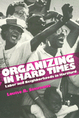

One of America's poorest cities copes with economic restructuring
One of America's poorest cities copes with economic restructuring


 One of America's poorest cities copes with economic restructuring
One of America's poorest cities copes with economic restructuring

|  |
Organizing In Hard TimesLabor and Neighborhoods In HartfordLouise B. Simmonspaper EAN: 978-1-56639-156-6 (ISBN: 1-56639-156-3) |
In 1990, Hartford, Connecticut, ranked as the eight poorest city in the country by the census; the real estate market was severely depressed; downtown insurance companies were laying off and the retail department stores were closing; public services were strained; and demolition sites abandoned for lack of funds pockmarked the streets. Hartford's problems are typical of those experienced in numerous U.S. cities affected by a lingering recession.
The harsh economic times felt throughout the city's workplaces and neighborhoods precipitated the formation of grassroots alliances between labor and community organizations. Coming together to create new techniques, their work has national implications for the development of alternative strategies for stimulating economic recovery.
Louise B. Simmons, a former Hartford City Councilperson, offers an insider's view of these coalitions, focusing on three activist unions—rhe New England Health Care Employees Union, the Hotel and Restaurant Employees, and the United Auto Workers—and three community groups—Hartford Areas Rally Together, Organized North Easterners-Clay Hill and North End, and Asylum Hill Organizing Project. Her in-depth analysis illustrates these groups' successes and difficulties in working together toward a new vision of urban politics.
Acknowledgments
1. Introduction
2. Alliances, Coalitions, and Electoral Activities
3. Labor Organizing
4. Neighborhood Organizing
5. Concluding Thoughts
Epilogue
References
Index
Louise B. Simmons is Director of the University of Connecticut Urban Semester Program.
Urban Studies
Labor Studies and Work
Labor and Social Change, edited by Paula Rayman and Carmen Sirianni.
Labor and Social Change, edited by Paula Rayman and Carmen Sirianni, includes books on workplace issues like worker participation, quality of work life, shorter hours, technological change, and productivity, as well as union and community organizing and ethnographies of particular occupations.
© 2015 Temple University. All Rights Reserved. This page: http://www.temple.edu/tempress/titles/928_reg.html.